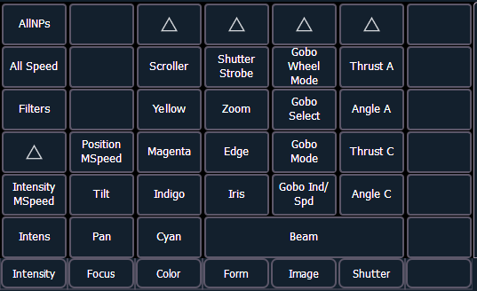

The parameter display in the CIA is populated with only those parameters that are found in the patched devices. As channels are selected, the parameter display will change to show only parameters relevant to the selected channels.
The parameters are divided into the following categories: Intensity, Focus, Color and Beam. Each parameter category is represented with buttons in the parameter tiles. These buttons allow you to select the entire collection of all parameters within that category. You can also select a single parameter from a category using that parameter’s button in the parameter display.
Beam has three subcategories which correspond to the way the encoders are mapped. They are {Form}, {Image}, and {Shutter}. These subcategories are represented with buttons in the CIA. Pressing these buttons allows you to select all parameters within those subcategories.
Beam has three subcategories. They are {Form}, {Image}, and {Shutter}. These subcategories are represented with buttons in the CIA. Pressing these buttons allows you to select all parameters within those subcategories.

Within the CIA, in the upper left corner, notice the {All NPs} button. When pressed, this collects all non-intensity parameters for further editing.
Some examples of using parameter touchbuttons are: